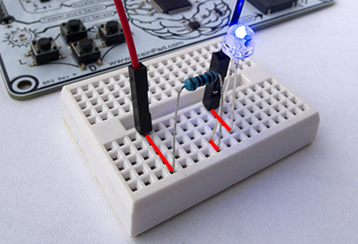

Electronics

The understanding of basic electronics is a very valuable skill. We live in a society ruled by science and technology where few people understand science and technology. One common experience shared among many of the better engineers and technical people is that they started at a young age. Even those not interested in engineering as a career will benefit from having technical knowledge. Here are some ways to get started with the BrainPad to learn electronics.
Snap Circuits
Snap Circuits is a fun and easy way to build your own circuits and learn about electronics. The components and wires snap together using the same type of snaps used for clothing. This makes it fast and easy to assemble and disassemble circuits. They have full color manuals showing pictures of each of the hundreds of possible projects you can build.
We have a simple example of using the BrainPad, Microsoft MakeCode, and Snap Circuits here.

Breadboarding
This option is recommended for the more advanced users with electronics background or users with an interest in learning electronics. It is, however, a very inexpensive way to build and learn about circuits.
Solderless breadboards can be used to quickly build and test electrical circuits which can be connected to the BrainPad. Circuits are built by just plugging wires and components into the holes (sockets) on the breadboard. Each hole in the breadboard is electrically connected to some of the holes next to it as shown below by the black lines in the image on the right. The longer lines of connected holes on the left and right side of the breadboards below are usually used for power (labeled with "+") and ground (labeled with "-") connections.


The example circuit below shows an LED connected to the BrainPad. The red lines have been added to show the circuit connections inside the breadboard.

Breadboards are available in a number of sizes, and many breadboards provide a way to attach additional breadboards to form larger circuits.
The nice thing about breadboards is you can easily create or change circuits without soldering. The drawback is that the connections are not as reliable or durable as soldering. Solderless breadboarding is still the way many engineers and hobbyists build prototype circuits, and once built it is easy to transfer your circuits to more permanent soldered prototype boards.
Breakout Boards
Breakout boards provide a convenient way to use components that are difficult for hobbyists to work with. For example, some surface mount components are very difficult or nearly impossible to solder by hand. Breakout boards are small circuit boards you can buy with these components already soldered to the board. They usually provide pins, through holes, or larger surface mount pads that are much easier to work with. Breakout boards allow you to use components that would be difficult or impossible to use otherwise.
Get Creative!
You can use any one of the above methods to make electronic circuits or none of them at all! Simple circuits can be formed by just twisting component wires together, using wire nuts, crimp connectors, perforated boards, soldering, taping, alligator clips -- whatever you have on hand. Just be sure you know enough to stay safe. Also, neatly built circuits are not only safer and more reliable, but much easier to work with. If you ever have to trouble shoot a circuit made of a "rat's nest" of wires, you'll quickly understand what we mean!